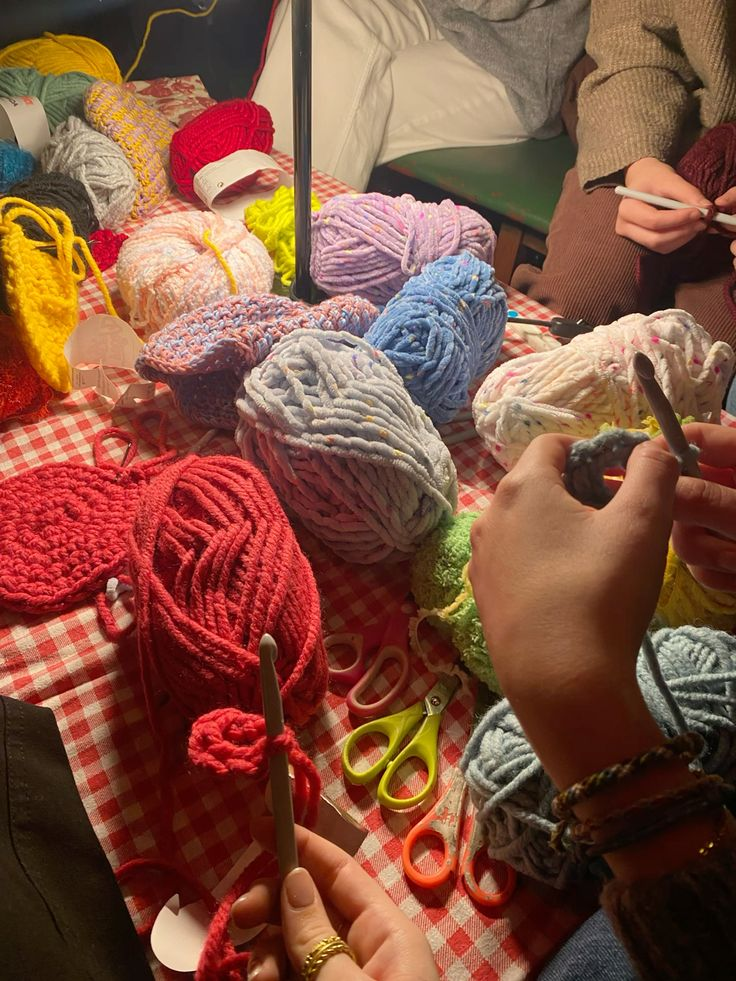

sobre mí : )

hola, soy viky ♥
tengo 18 años y me encanta crear cosas, encuentro que es una forma muy dedicada de demostrar tu creatividad y me gusta comprometerme con mis proyectos. hay algo sumamente mágico en generar cosas físicas donde antes solo había materiales. tengo una gran pasión por hacer y alterar ropa, así como por hacer figuras tejidas, que es lo que intentaré transmitir en esta especie de vlog ♥
esta página funciona como un tipo de portafolio de mis trabajos, y también es una forma de documentar mi progreso. a su vez, si te sentís atraído por algún patrón, los dejo al final de cada cajita del proyecto!
te interesa mi proceso de trabajo? mantenete actualizado!
tablero de pinterest con posibles proyectosmúsica que escucho mientras creo cositas ♥